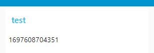
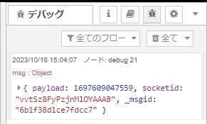

ダッシュボードのtemplateでオリジナルなノードを作る際に、スクリプト内でmsg.payloadを監視したい場合があります。
前のノードからメッセージが送信された時に所望の処理を実行するようなことが考えられます。
ダッシュボードのtemplateについて その1の記事に書いたscopeを使えば可能です。
前回と同様にノードを配置し繋いでください。

まず、「template」のHTMLコードを以下のようにしてください。
<div>{{msg.payload}}</div>
<script>
var nodeScope = scope;
</script>下の3つのチェックボックスはOFFにしてください。

起動時と「inject」のボタンを押した時に、ダッシュボードに表示されたタイムスタンプが変更されることが分かると思います。

しかし、templateの「入力メッセージをそのまま渡す」がOFFなので、デバッグには何も表示されないはずです。
scopeにはデフォルトで、オブジェクトの変更を監視することが可能な「scope.$watch()」というメソッドがあります。
HTMLコードを以下のように変更してください。
<div>{{msg.payload}}</div>
<script>
var nodeScope = scope;
scope.$watch('msg', function(msg) {
if (msg) {
nodeScope.send({payload: msg.payload}); ★nodeScopeを使ってください。
}
});
</script>起動時と「inject」のボタンを押した時に、以下のようにデバッグにも表示されるようになります。
スクリプト内でメッセージの監視を行うことができました。
